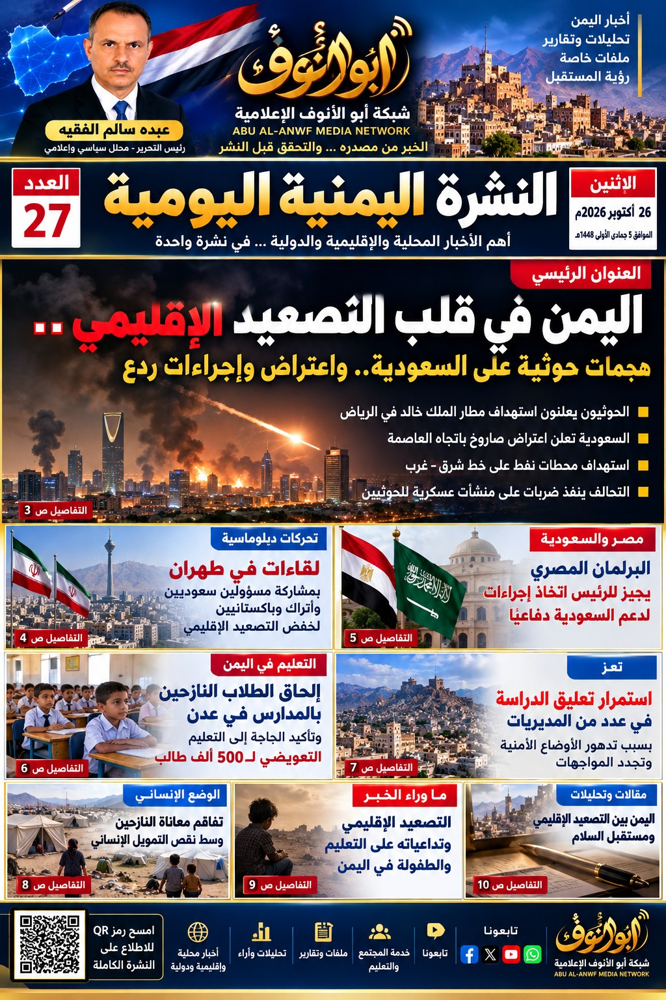
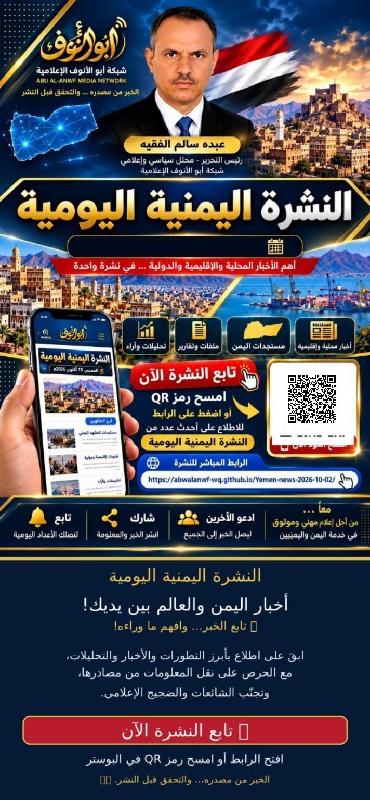

تعليق الدراسة لحماية الطلاب
قال نائب وزير التربية والتعليم الدكتور علي العباب إن القرار في بعض مناطق تعز جاء في ظل ظروف أمنية وعدم توافر بيئة تعليمية مناسبة، وأشار إلى مراجعة منصة التعليم عن بُعد وتطويرها.
شبكة أبو الأنوف الإعلامية
الخبر من مصدره… والتحقق قبل النشر


تعليق الدراسة في بعض المناطق يضع حماية الطلاب واستمرار تعليمهم وتعويض الفاقد الدراسي في صدارة الأولويات.
اقرأ الملف التعليميمصادر الأرقام: الجزيرة نقلًا عن OCHA ومكتب حقوق الإنسان؛ وزارة التربية والتعليم — لقاء اليونيسف. الأرقام مرتبطة بمصادرها وتواريخها، ولا تمثل إحصاءً خاصًا بقرار تعليق الدراسة.
قال نائب وزير التربية والتعليم الدكتور علي العباب إن القرار في بعض مناطق تعز جاء في ظل ظروف أمنية وعدم توافر بيئة تعليمية مناسبة، وأشار إلى مراجعة منصة التعليم عن بُعد وتطويرها.
نقلت الجزيرة عن OCHA نزوح نحو 260 ألف شخص منذ أغسطس، مع وجود قرابة نصفهم في تعز، كما أوردت بيانات عن ضحايا مدنيين تحقّق منها مكتب حقوق الإنسان.
بحثت وزارة التربية والتعليم مع اليونيسف إجراءات إلحاق الطلاب النازحين في عدن، وأشارت الوزارة إلى توجيهات ببناء فصلين إضافيين في مخيم الفردوس وتسهيل إجراءات القيد.
تجارب التعليم التعويضي السابقة يمكن أن تسهم في معالجة الفاقد الدراسي، لكن أي خطة خاصة بالطلاب المتضررين حاليًا تحتاج إلى إعلان رسمي يوضح المستهدفين والمدة وآلية التنفيذ.
تنبيه تحريري: المواد التالية مبنية على الأخبار المقدمة للتحرير. ينبغي مطابقة التصريحات والتفاصيل مع مصادرها الأصلية قبل النشر، والفصل بين إعلان أي جهة وبين الوقائع المستقلة المؤكدة.
تتداول مواد إخبارية تقارير عن إعلان جماعة الحوثيين استهداف مطار الملك خالد في الرياض ومحطات ضخ على خط أنابيب النفط شرق–غرب، وعن إعلان التحالف اعتراض صاروخ قال إنه كان متجهًا إلى الرياض وتنفيذ عمليات استهدفت مواقع عسكرية حوثية في اليمن.
وتظل هذه التفاصيل منسوبة إلى الجهات التي أعلنتها، ولا ينبغي عرضها باعتبارها تحققًا مستقلًا ما لم تؤيدها مصادر موثوقة إضافية. ويعيد التصعيد، إن تأكدت تفاصيله، تسليط الضوء على المخاطر التي قد تطال أمن اليمن والملاحة في البحر الأحمر والمنشآت الحيوية في المنطقة.
بحسب المادة الصحفية المقدمة، أجاز البرلمان المصري للرئيس عبد الفتاح السيسي اتخاذ إجراءات لدعم الدفاع عن السعودية إذا طلبت الرياض ذلك. ولا يعني هذا التفويض، بحد ذاته، أن قوات مصرية انتشرت بالفعل؛ إذ ينبغي التمييز بين الإجراء البرلماني وأي قرار تنفيذي لاحق.
أفادت المادة المقدمة بوجود لقاءات في طهران بمشاركة مسؤولين سعوديين وأتراك وباكستانيين مع مسؤولين إيرانيين في إطار جهود لاحتواء الأزمة. وإذا تأكدت هذه اللقاءات من مصادرها، فهي تشير إلى مسار اتصالات دبلوماسية، لكنها لا تعني التوصل إلى اتفاق نهائي.
تحليل موثق لمخاطر استغلال التعليم والأنشطة الطلابية في التعبئة الأيديولوجية وتجنيد الأطفال، وانعكاس ذلك على حقوق الطفل ومستقبل المجتمع اليمني.
تستند المادة إلى تقارير فريق خبراء الأمم المتحدة بشأن اليمن، ومنظمة هيومن رايتس ووتش، والمرجعيات الدولية المتعلقة بالأطفال والنزاع المسلح.
قراءة التحليل كاملًا والمراجعامسح رمز QR لزيارة الموقع العام